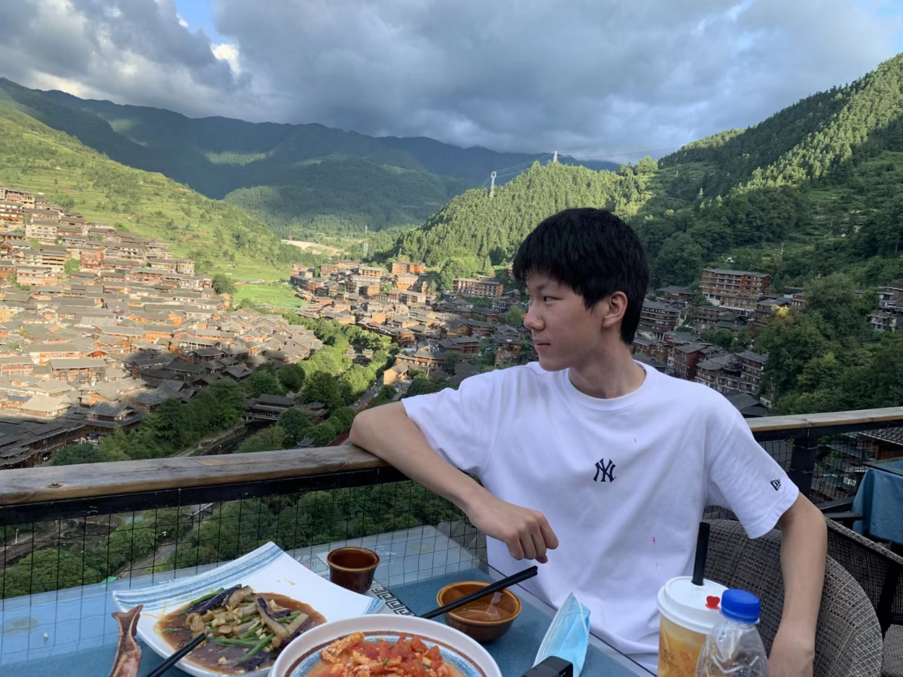
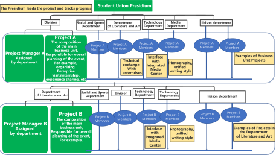

Li Chengrun
“Born towards the sun, following the light”— I am Li Chengrun, sunshine and confidence are my characteristics. I am a collaborator with a strong team spirit; I am a practitioner with a strong sense of responsibility and collective honor, who works diligently and responsibly, and is hardworking; I am a student worker who is willing to listen to the voices of my classmates, understand the requirements of the college, and provide high-quality services to them.
“向阳而生,逐光而行”—我是李承润，“阳光” “自信”是我的特点。我是一个具有较强团队合作精神的合作者; 一个具有强烈责任心和集体荣誉感，做事认真负责，吃苦耐劳的实践者; 一个愿意倾听同学声音，了解学院要求，为同学们提供高质量服务的学生工作者。
Policy Agenda
Campaign philosophy: Based on reality and serving classmates
Reasons for running for the presidency:
-
I have extensive experience working in SJTU and JI’s associations. As a freshman, I have joined organizations such as the SJTU Singers’ League and the UM-SITU-JI SSTIA. I was responsible for the planning and on-site organization of activities multiple times. Through participating in these activities, I have met a group of like-minded friends and established a strong friendship. It is this kind of friendship that spans colleges and departments that can continuously contribute to organizational construction or innovative activities.
-
I conducted in-depth research on the work of the student union. Communicate with the college's guiding teachers, members of the presidium, and heads of various departments on the main issues and difficulties in student work, and write preliminary improvement plans. If I am elected this time, I hope it can be implemented through the new presidium.
-
I have always had a dream of being someone who can change the world, at least someone who participates in changing the world. The student union is where my dream sets sail. I will put in all my enthusiasm and pass on my dreams to every student through the work of the student union and various organizational activities.
Section One: Policy Agenda
Core ideas of organizational reform plan: “Taking departments as dimensions and projects as the center”
The current functional positioning of various departments of the Student Union is feasible, and interdepartmental cooperation can also be directly achieved through communication among ministers. However, there are still the following issues:
-
There is little cooperation between various departments of the student union. After entering the student union, there are few opportunities to meet classmates from other departments besides my own. You only know the senior and senior students in your own department, you can only know your department’s manager, and no other managers know you either.
-
The existing scale system is too complete, which may seem like a step-by-step replication, but some activities can be abandoned, while others can be done more.
At present, the barriers between various departments of the student union are still relatively thick. Only through the project operation mode can we unite and motivate project team members to form strong combat effectiveness. So, for different projects, forming two groups of fifteen to twenty people in the student union and consciously cultivating a strong project operation team is the foundation for ensuring the orderly development of project organization and maintaining the overall vitality of the student union's daily operation.
Project-based reform is not about making projects independent of departments, but about implementing a project-based system based on departments. Project management is led by the presidium, and each project must have a core leader. The responsible person defines the work functions of each person involved in the project and closely monitors the implementation of the entire project.
The simple idea is: Consolidate friendships through projects, train a strong team through projects, and form lifelong friendships through projects.
- A project responsibility system with one department as the main body responsible for project implementation, cooperation from multiple departments, and the overall responsibility of the presidium members.
-
Clarify the supporting role of each department:
- Strengthen the training of professional skilled personnel in supporting departments, such as the Media Department's photography and camera skills, and the External Relations Department's external sponsorship support, etc.
- Optimize the responsibilities of the Media Department. The Media Department is responsible for collecting information on various departments and projects, writing press releases, taking photos of other departments, and coordinating with the Integrated Media Center to ensure consistency in information style release.

Section Two: College Culture and Activities
The culture of the school is like a flowing river that needs to be passed on and innovated from generation to generation in perseverance. The work of the Bureau is on the one hand to accumulate, maintain and enhance the cultural work of the school, and on the other hand to judge whether an activity is necessary from the following three perspectives:
- Whether it can give students a better learning and living environment
- Whether it can make the students have fun after study
- Whether it can provide a platform for students to communicate and develop
The specific initiatives are the following activities:
- Students can have fun outside of their studies: food festivals, ball dances, social gatherings, night markets, etc
- Activities that parents enjoy: campus visits for parents
- Provide a platform for communication and development: HC training, school-enterprise visits, internship experience sharing sessions for senior and senior students, EAP psychological consultation activities, and entering Yunnan (a cooperation activity with the school base)
Section Three: Student rights protection and Feedback
The student union is an organization that represents the voices of students, so it is important to know the pain points of students, collect their concerns, and promptly communicate and implement with relevant departments of the school on behalf of students. The key point is how to collect and confirm the needs of students. Key point 2: How to track and implement problem-solving.
Taking the "online course selection" as an example, we investigated and learned about the needs of students in the service period, determined the current, medium-term and long-term solutions, and released them to students using the official account.
Section Four: Communication between Student Union and School-level Student Union Organizations
Using "projects" and "activities" as carriers to drive cooperation between school-level and college-level student unions, effectively integrating resources and sharing experiences.
- Give full play to the extraordinary role of mentors, and the mentors at SJTU are all experienced. The student union needs to communicate and organize activities, first of all, with the support of two teachers in charge of different student union. Communicate with teachers to prepare a plan, propose a relatively reasonable activity plan, and strive for their support in order to provide in-depth communication and corresponding support for the activity from the perspective of the school and the hospital.
- Secondly, the cadres of the student union should communicate and exchange ideas and suggestions for joint activities or support with other student unions in advance with their corresponding cadres, and listen to their ideas and opinions. If the student union of the other party also has the intention to strengthen communication and cooperation, both parties should promptly agree on the theme, timing, and corresponding venue of the cooperative event, so as to make relatively complete preparations for the event in the end.
- It is possible for both student union officials to take the lead and privately organize interesting social activities for both student union members. By organizing these activities, both members can understand, communicate, and establish friendships, preparing for the deep cooperation between the two clubs in the future.
竞选理念：立足实际，服务同学
就本次参加竞选主席团：
-
我有丰富的社团学院组织工作经验。刚刚入学就参加了密院科协、交大歌手联盟等组织。多次负责活动方案的策划与现场组织。通过社团项目与学院活动的参与，我认识了一批志同道合的朋友，建立了牢固的友谊。正是这种跨越学院、跨越部⻔间的友谊，可以源源不断为组织建设，亦或创新活动的开展贡献出力量。
-
我对学生会工作进行了深入调研。和学院指导老师、主席团成员、各部⻔负责人交流当前学生工作的主要问题和困难，撰写了初步的改进方案，如果本次能够当选，希望可以通过新一届主席团实施。
-
我一直有一个梦想，做一个可以改变世界的人，至少也是参与改变这个世界的人。学生会是我梦想起航的地方，我会投入全部的热情,通过学生会工作和各种组织活动,将梦想传递到每一位同学。
组织改革方案核心思路
“以部门为维度，以项目为中心”
当前学生会各部门职能定位是可行的，部门间合作通过部长们沟通也可以直接实现，然而依然存在以下问题：
-
学生会各部门间没有配合。进入学生会后，除了自己部门的同学很少有办法认识其他部门的同学，认识的学长学姐也大多是单线的。
-
现有规模体系太完善，看似按部就班复刻就行，但是有的活动可以舍弃，有的活动可以做得更多。
学生会目前各部门间壁垒依然较厚，只有通过项目运作模式，才能凝聚和激励项目团队成员形成强战斗力。所以针对不同的项目，在学生会中找出十五至二十个人的群体，有意识培养强有力的项目运作团队，才是保证项目组织有序开展的基础，更是保持学生会日常运作整体的活力。
项目制改革不是让项目独立于部门，而是基于部门搞项目制。项目管理由主席团牵头，每一个项目都要有核心负责人。负责人定义好每个参与到项目中的人的职能，并紧盯整个项目的落实。
简单思路是：通过项目凝结友谊，通过项目锻炼强有力队伍，通过项目形成一生的友谊。
- 以一个部门为项目实施负责的主体，多部门配合，主席团成员总负责。
-
明晰部门的支撑作用：
- 强化支撑部门的专业技能人员培养，例如传媒部摄影摄像技巧，外联部对外寻求赞助支持等。
- 优化传媒部职责，传媒部负责收集各部门各项目的信息，会写新闻稿，给其他部门拍照，并和融媒体中心接口，信息风格发布一致。
学院文化及活动
学校的文化像一条流动的河流，需要在坚持中一代一代的传承并创新。主席团的工作一方面是在积累、维护、调试与提升学校的文化工作，另一方面是从以下三个角度判断一个活动是否有必要开展：
- 能不能给同学们更好的学习生活环境
- 能不能让同学们在学习之余玩得开心
- 能不能提供交流发展的平台
具体的举措就是如下的活动：
- 学生学习之余玩得开心：美食节，舞会，联谊会，夜市等
- 家长喜闻乐见的活动：家长校园参观活动
- 提供交流发展的平台：HC培训，校企参观交流，学长学姐实习经验分享会，EAP心里咨询活动，走进云南（和学校基地合作的活动）
学生权益维护与意见反馈
学生会是代表学生心声的组织，因此要知道同学们的痛点，收集同学们关注的问题，并及时代表同学和学校相关部门沟通落实，关键点一是如何收集并确认同学的需求。二是如何跟踪并落实解决问题。
以“网上选课”为例，我们在服务月经过问卷、采访、平时交流等调研形式了解同学们的需求，确定当前、中期、远期的解决方案，并利用公众号发布给同学们。
学生会和校级院级学生会组织的交流
以“项目”和“活动”作为载体，驱动校级和院级学生会进行合作，有效整合资源，经验进行共享。
- 发挥思政老师的重要作用。不同学生会要交流沟通和举办活动，首先就要从两位分管不同学生会的两位老师入手，找老师沟通准备方案，提出相对合理的活动计划，争取老师的支持才有可能从校院方的角度为活动提供深度交流和相应的支持。
- 其次，学生会主席团要提前与其他校院级学生会组织的负责人沟通交流联合开展活动的想法，听取对方的想法和意见。如果对方也有加强交流合作的意向，双方应及时商定合作举办活动的主题、举办时间和相应的地点等，便于最终为活动的开展做出相对完善的准备。
- 可以由双方学生会负责人牵头，私下组织双方学生会成员进行趣味性的联谊活动，通过活动促使双方成员了解沟通并建立友谊，为之后的深度合作做好准备。